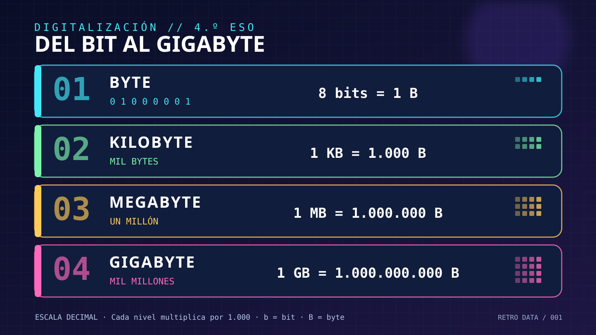
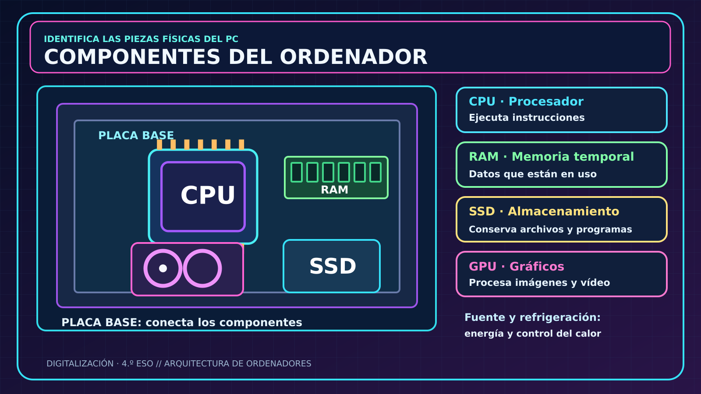
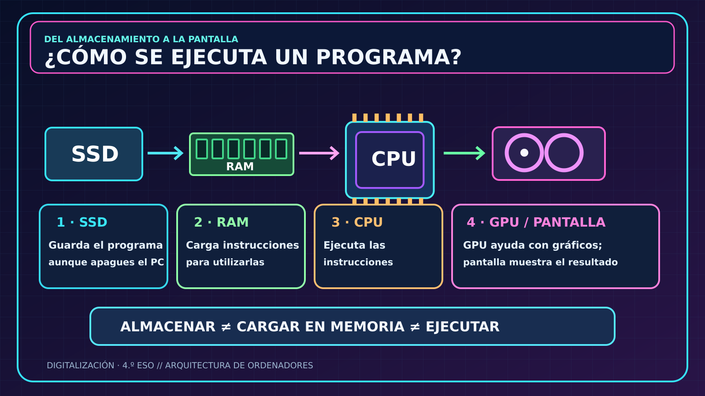
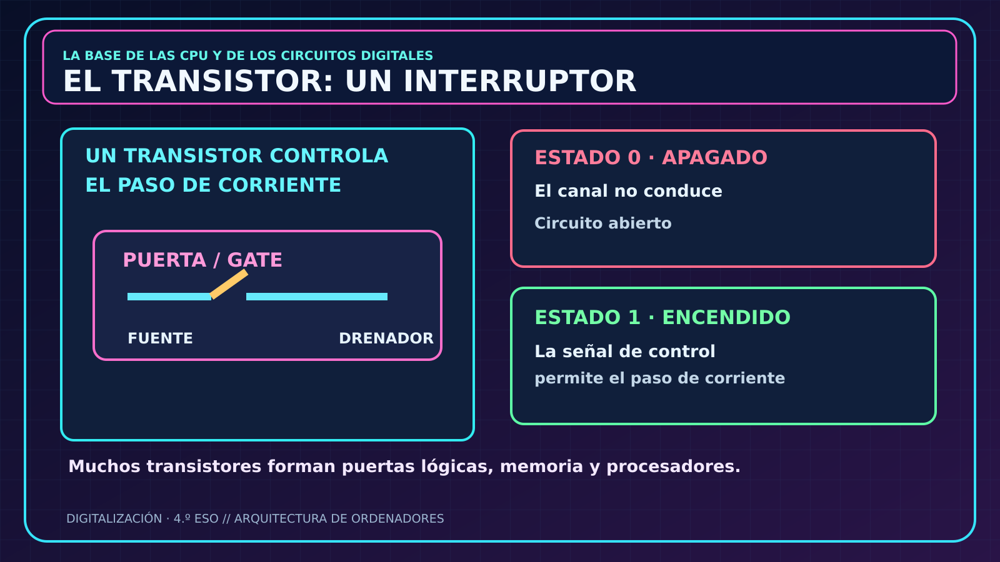
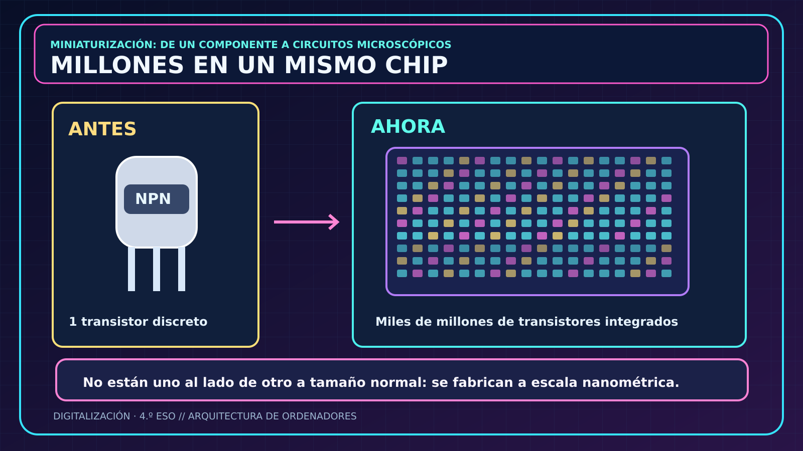
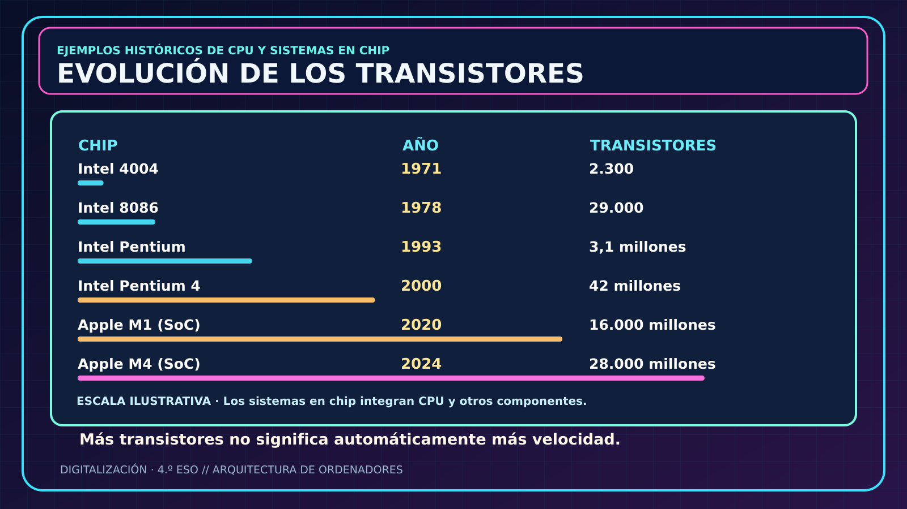

Digitalización · Tema 01
Tema 1. Arquitectura de ordenadores
Aprende explorando los componentes y sus funciones
Tema: v1.4.0 · 19/11/2026
Digitalización · Tema 02
Objetivos de aprendizaje
Tema: v1.4.0 · 19/11/2026
Digitalización · Tema 03
Objetivos de aprendizaje
Tema: v1.4.0 · 19/11/2026
Digitalización · Tema 04
1. Representación digital de la información
Tema: v1.4.0 · 19/11/2026
Digitalización · Tema 05
Del bit al gigabyte

Tema: v1.4.0 · 19/11/2026
Digitalización · Tema 06
1. Representación digital de la información
Tema: v1.4.0 · 19/11/2026
Digitalización · Tema 07
1. Representación digital de la información
Tema: v1.4.0 · 19/11/2026
Digitalización · Tema 08
Componentes del ordenador

Tema: v1.4.0 · 19/11/2026
Digitalización · Tema 09
2. Hardware y componentes de un ordenador
Tema: v1.4.0 · 19/11/2026
Digitalización · Tema 10
2. Hardware y componentes de un ordenador
| Componente | Función principal | Ejemplo de uso |
|---|---|---|
| Procesador (CPU) | Ejecuta instrucciones y realiza operaciones | Abrir un programa y efectuar cálculos |
| Memoria RAM | Guarda temporalmente datos de los programas en uso | Trabajar con varias aplicaciones abiertas |
| Almacenamiento (SSD/HDD) | Conserva archivos y programas aunque se apague el equipo | Guardar documentos y fotografías |
| Placa base | Conecta y permite comunicar los componentes | Conectar CPU, RAM y unidades de almacenamiento |
| Procesador gráfico (GPU) | Acelera el procesamiento de gráficos y otros cálculos | Videojuegos, edición y determinadas tareas de IA |
| Fuente de alimentación | Proporciona energía eléctrica al equipo | Alimentar los componentes de un PC |
Tema: v1.4.0 · 19/11/2026
Digitalización · Tema 11
2. Hardware y componentes de un ordenador
Tema: v1.4.0 · 19/11/2026
Digitalización · Tema 12
Del SSD a la pantalla

Tema: v1.4.0 · 19/11/2026
Digitalización · Tema 13
2.1. ¿Cómo trabajan juntos?
Tema: v1.4.0 · 19/11/2026
Digitalización · Tema 14
El transistor como interruptor

Tema: v1.4.0 · 19/11/2026
Digitalización · Tema 15
2.2. El transistor: la pieza básica de las CPU y GPU
Tema: v1.4.0 · 19/11/2026
Digitalización · Tema 16
2.2. El transistor: la pieza básica de las CPU y GPU
Tema: v1.4.0 · 19/11/2026
Digitalización · Tema 17
Miniaturización de los transistores

Tema: v1.4.0 · 19/11/2026
Digitalización · Tema 18
Evolución del número de transistores en procesadores y SoC
| Año | Procesador | Transistores aproximados | Tipo |
|---|---|---|---|
| 1971 | Intel 4004 | 2.300 | CPU |
| 1978 | Intel 8086 | 29.000 | CPU |
| 1993 | Intel Pentium | 3,1 millones | CPU |
| 2000 | Intel Pentium 4 | 42 millones | CPU |
| 2006 | Intel Core 2 Duo | 291 millones | CPU |
| 2020 | Apple M1 | 16.000 millones | SoC |
| 2024 | Apple M4 | 28.000 millones | SoC |
Tema: v1.4.0 · 19/11/2026
Digitalización · Tema 19
Evolución del número de transistores en procesadores y SoC
Tema: v1.4.0 · 19/11/2026
Digitalización · Tema 20
Evolución histórica de los transistores

Tema: v1.4.0 · 19/11/2026
Digitalización · Tema 21
Evolución de los chips gráficos y de IA de NVIDIA
| Año | Chip NVIDIA | Transistores aproximados | Uso destacado |
|---|---|---|---|
| 1999 | GeForce 256 | 23 millones | Gráficos 3D |
| 2006 | GeForce 8800 GTX | 681 millones | Videojuegos y gráficos |
| 2016 | GeForce GTX 1080 | 7.200 millones | Gráficos y realidad virtual |
| 2022 | GeForce RTX 4090 | 76.300 millones | Gráficos y cálculos de IA |
| 2024 | NVIDIA Blackwell B200 | 208.000 millones | Aceleración de inteligencia artificial |
Tema: v1.4.0 · 19/11/2026
Digitalización · Tema 22
Evolución de los chips gráficos y de IA de NVIDIA
Tema: v1.4.0 · 19/11/2026
Digitalización · Tema 23
Evolución de los chips gráficos y de IA de NVIDIA
Tema: v1.4.0 · 19/11/2026
Digitalización · Tema 24
3. Montaje, configuración y rendimiento
Tema: v1.4.0 · 19/11/2026
Digitalización · Tema 25
3. Montaje, configuración y rendimiento
Tema: v1.4.0 · 19/11/2026
Digitalización · Tema 26
3. Montaje, configuración y rendimiento
Tema: v1.4.0 · 19/11/2026
Digitalización · Tema 27
4. Dispositivos móviles
Tema: v1.4.0 · 19/11/2026
Digitalización · Tema 28
4. Dispositivos móviles
| Aspecto | Ordenador de sobremesa | Teléfono móvil |
|---|---|---|
| Alimentación | Habitualmente conectado a la red eléctrica | Batería recargable |
| Componentes | A menudo más accesibles y ampliables | Muy integrados; poco ampliables |
| Interacción | Teclado, ratón y monitor | Pantalla táctil y sensores |
| Usos | Trabajo, creación de contenido, cálculo | Comunicación, fotografía, navegación, aplicaciones |
Tema: v1.4.0 · 19/11/2026
Digitalización · Tema 29
4. Dispositivos móviles
Tema: v1.4.0 · 19/11/2026
Digitalización · Tema 30
5. Actividades propuestas
Tema: v1.4.0 · 19/11/2026
Digitalización · Tema 31
5. Actividades propuestas
Tema: v1.4.0 · 19/11/2026
Digitalización · Tema 32
6. Preguntas de repaso
Tema: v1.4.0 · 19/11/2026
Digitalización · Tema 33
6. Preguntas de repaso
Tema: v1.4.0 · 19/11/2026
Digitalización · Tema 34
7. Glosario básico
Tema: v1.4.0 · 19/11/2026
Digitalización · Tema 35
7. Glosario básico
Tema: v1.4.0 · 19/11/2026